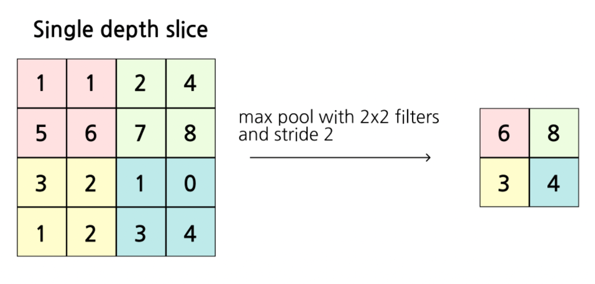
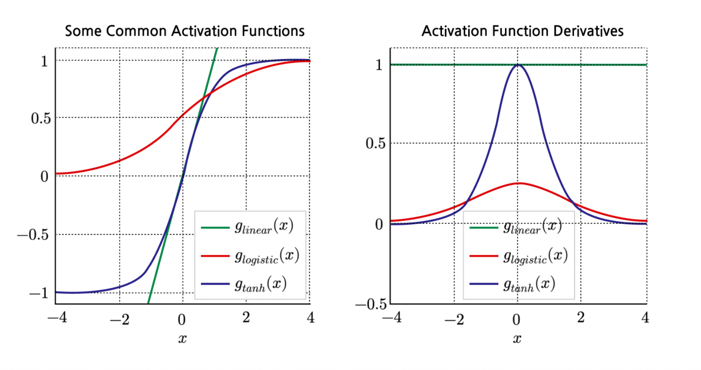
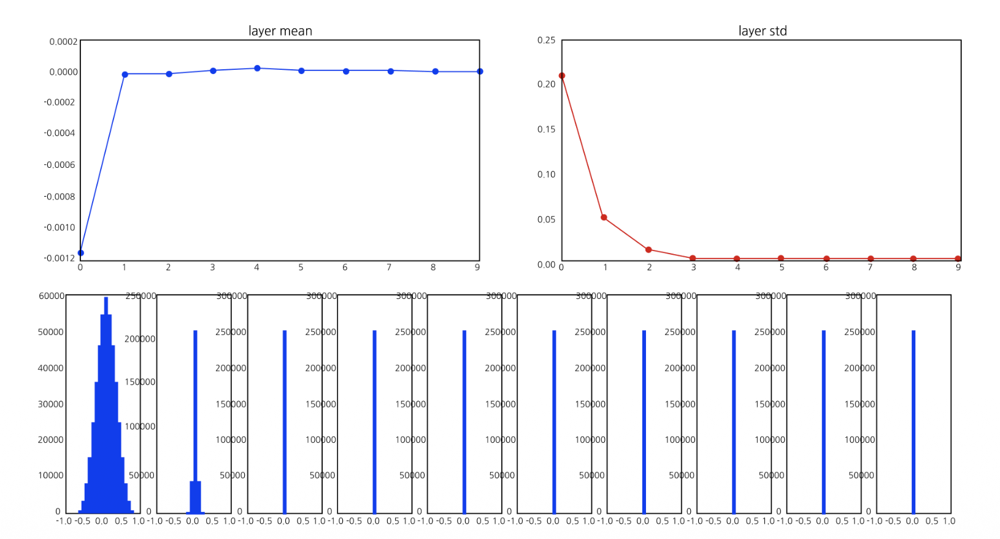
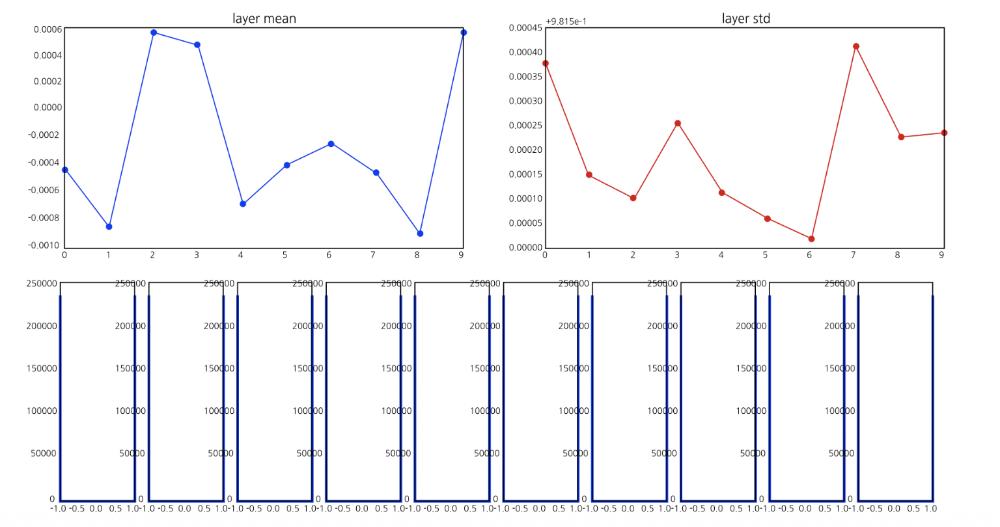
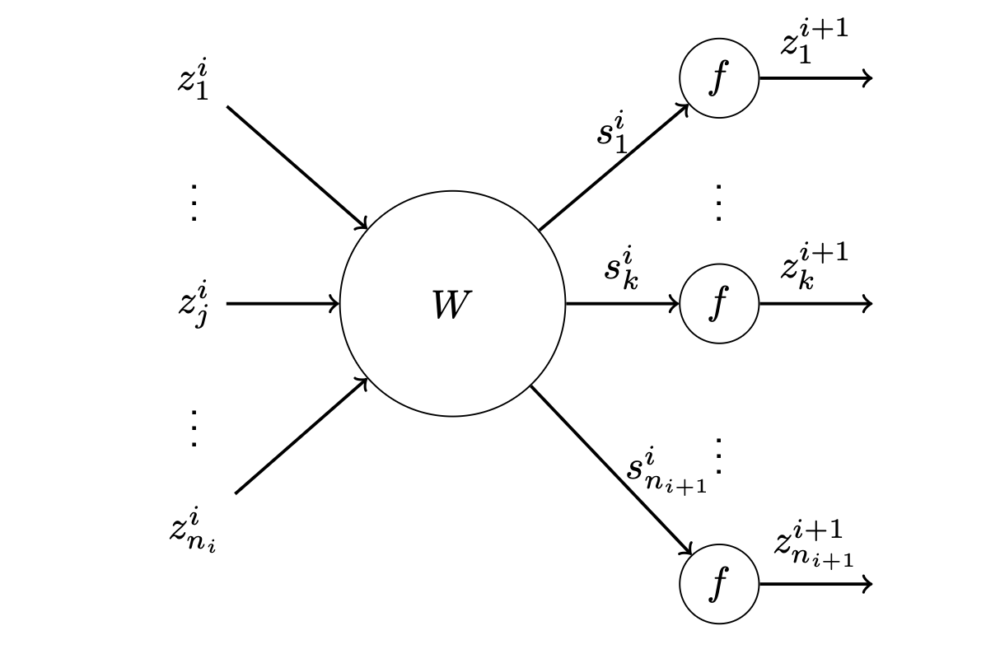
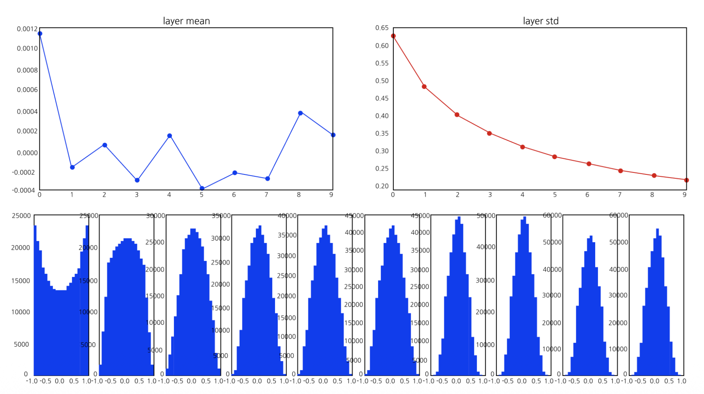

1. Pooling Layer (풀링 계층)
Convolutional Neural Network (CNN) 구조에서 합성곱(Convolution) 계층 다음으로 자주 등장하는 것이 풀링 계층(Pooling Layer)입니다. 풀링 계층의 주된 목적은 공간적 차원(가로, 세로)을 축소하여 연산량을 줄이고, 미세한 위치 변화에 대한 공간적 불변성(Spatial Invariance)을 부여하는 것입니다.
주로 사용되는 방법에는 대상 영역 내의 최댓값을 취하는 Max Pooling(최대 풀링)과 평균값을 취하는 Average Pooling(평균 풀링)이 있습니다.

위 그림의 Max Pooling 과정을 수학적으로 살펴보면 다음과 같습니다. \(4 \times 4\) 입력 행렬에 대해 크기가 \(2 \times 2\)인 필터를 보폭(Stride) 2로 슬라이딩하면, 입력 데이터가 겹치지 않는 4개의 구역으로 분할됩니다. * 좌상단 영역: \(\max(1, 1, 5, 6) = 6\) * 우상단 영역: \(\max(2, 4, 7, 8) = 8\) * 좌하단 영역: \(\max(3, 2, 1, 0) = 3\) * 우하단 영역: \(\max(1, 2, 3, 4) = 4\)
이처럼 풀링은 학습해야 할 별도의 파라미터(가중치)가 존재하지 않으며, 단순히 주어진 규칙(Max, Average 등)에 따라 데이터를 다운샘플링(Downsampling)하는 역할을 수행합니다.
2. Activation Functions and Derivatives (활성화 함수와 도함수)
신경망에 비선형성을 부여하는 활성화 함수들의 수식과, 학습에 필수적인 도함수(Derivative, Gradient)의 형태를 이해하는 것은 매우 중요합니다.

- Logistic (Sigmoid) \[g_{logistic}(z) = \frac{1}{1 + e^{-z}}\] 출력값을 \([0, 1]\) 사이로 압축합니다. 도함수의 최댓값이 0.25에 불과하여, 층이 깊어질수록 기울기가 빠르게 소멸하는 단점이 있습니다.
- Tanh (Hyperbolic Tangent) \[g_{tanh}(z) = \frac{e^z - e^{-z}}{e^z + e^{-z}}\] 출력값을 \([-1, 1]\) 사이로 압축하며, 영점 중심(Zero-centered)입니다. 도함수의 최댓값이 1이지만, Sigmoid와 마찬가지로 입력의 절댓값이 커지면 양극단에서 도함수(기울기)가 0으로 수렴합니다.
이러한 포화(Saturation) 현상은 기울기 소실(Vanishing Gradient) 문제를 일으켜 학습을 방해합니다.
3. 가중치 초기화(Weight Initialization)의 실패 사례
딥러닝 모델의 성능은 가중치(Weight)를 처음에 어떤 값으로 초기화하느냐에 따라 극단적으로 달라집니다. \(tanh\) 활성화 함수를 사용하는 10층짜리 Multi-Layer Perceptron(MLP)을 예로 들어 잘못된 초기화의 두 가지 케이스를 살펴보겠습니다.
3.1. Small Weights (가중치가 너무 작을 때)
만약 가중치를 아주 작은 값으로 초기화하면 어떻게 될까요? W = 0.01 * np.random.randn(n_in, n_out)

- 문제점: 입력 데이터가 가중치와 곱해질 때마다 값이 기하급수적으로 작아집니다. 그 결과, 깊은 층으로 갈수록 활성화 값들이 모두 0으로 붕괴(Collapse)됩니다.
- 역전파(Backward) 시의 문제: 연쇄 법칙(Chain rule)에 의해 기울기를 계산할 때, 이 0에 가까운 값들이 계속 곱해지면서 Upstream gradient 역시 0으로 붕괴합니다. 결국 가중치 업데이트가 일어나지 않습니다.
3.2. Big Weights (가중치가 너무 클 때)
그렇다면 반대로 가중치를 아주 큰 값으로 초기화하면 어떻게 될까요? W = 1.0 * np.random.randn(n_in, n_out)

- 문제점: 순전파(Forward) 시 큰 가중치가 곱해지면서 활성화 함수(\(tanh\))의 입력이 매우 커지거나 작아집니다. 결과적으로 모든 활성화 값들이 \(-1\) 또는 \(+1\)로 완전히 포화(Saturated)되어 버립니다.
- 역전파(Backward) 시의 문제: 앞서 [Figure 2]에서 확인했듯, \(tanh\) 함수는 \(-1\)이나 \(+1\) 근처에서 도함수(기울기)가 거의 0입니다. 즉, Gradient가 흐르지 않아(doesn’t flow) 가중치가 업데이트되지 않는 치명적인 문제가 발생합니다.
4. Xavier Initialization (Xavier 초기화)
위의 문제들을 해결하기 위해 등장한 것이 Xavier Initialization(Glorot & Bengio, 2010)입니다. 이 방법의 핵심 목표는 네트워크의 각 층을 통과할 때 활성화 값의 분산(Variance)과 기울기의 분산이 일정하게 유지되도록 가중치의 분산을 정교하게 세팅하는 것입니다.
수학적인 유도 과정을 살펴보기 위해 아래와 같은 단일 노드 모델을 가정합니다. * 가중치 행렬 \(W\)의 요소들은 독립적이고 동일한 분포(i.i.d.)를 가지며 평균은 0입니다. (\(E[W]=0\)) * 편향(Bias)은 없습니다. * 입력 변수 \(z^i\) 역시 분산이 동일하고 평균이 0이라 가정합니다. (\(E[z]=0\)) * 활성화 함수 \(f(\cdot)\)는 영점 중심(Centered)이며 0 부근에서 선형적이고 기울기가 1인 함수입니다. (예: \(tanh\) 함수의 원점 부근 근사, \(f(s) \approx s\))

4.1. Forward Variance (순전파 분산 유지)
다음 층의 특정 노드 \(k\)의 출력값 \(z_k^{i+1}\)은 다음과 같이 근사할 수 있습니다. \[z_k^{i+1} = f(s_k^i) = f\left(\sum_{j=1}^{n_i} W_{kj}^i z_j^i\right) \approx \sum_{j=1}^{n_i} W_{kj}^i z_j^i\]
서로 독립인 두 확률변수 \(X, Y\)의 곱에 대한 분산 공식 \(Var(XY) = E[Y]^2Var(X) + E[X]^2Var(Y) + Var(X)Var(Y)\)에 평균이 0이라는 가정을 대입하면 \(Var(Wz) = Var(W)Var(z)\)가 됩니다. 따라서, \[\forall k, \ Var(z_k^{i+1}) \approx \sum_{j=1}^{n_i} Var(W_{kj}^i z_j^i) \approx n_i Var(W_{kj}^i) Var(z_j^i)\]
우리의 목표는 층을 통과해도 분산이 유지되는 것(\(Var(z_k^{i+1}) = Var(z_j^i)\))이므로, 약분하면 다음 조건을 얻습니다. \[Var(W_{kj}^i) = \frac{1}{n_i}\]
4.2. Backward Variance (역전파 분산 유지)
역전파 과정에서 손실(Loss) \(l\)에 대한 기울기(Gradient)의 분산도 유지되어야 합니다. 연쇄 법칙을 적용하면 다음과 같습니다. \[\frac{\partial l}{\partial z_j^i} = \sum_{k=1}^{n_{i+1}} \frac{\partial l}{\partial z_k^{i+1}} \frac{\partial z_k^{i+1}}{\partial z_j^i} = \sum_{k=1}^{n_{i+1}} \frac{\partial l}{\partial z_k^{i+1}} \underbrace{\frac{\partial z_k^{i+1}}{\partial s_k^i}}_{\approx 1} \frac{\partial s_k^i}{\partial z_j^i} \approx \sum_{k=1}^{n_{i+1}} \frac{\partial l}{\partial z_k^{i+1}} W_{kj}^i\]
순전파와 같은 논리를 적용하여 분산을 취하면, \[\forall k, \ Var\left(\frac{\partial l}{\partial z_k^i}\right) \approx n_{i+1} Var\left(\frac{\partial l}{\partial z_j^{i+1}}\right) Var(W_{jk}^i)\]
기울기의 분산이 유지되려면(\(Var(\partial l / \partial z_k^i) = Var(\partial l / \partial z_j^{i+1})\)), 역전파 관점에서는 가중치의 분산이 다음과 같아야 합니다. \[Var(W_{jk}^i) = \frac{1}{n_{i+1}}\]
4.3. 타협점: 조화 평균 (Harmonic Mean)
순전파에서는 분산이 \(1/n_i\), 역전파에서는 \(1/n_{i+1}\)이 되어야 한다는 서로 다른 두 조건이 도출되었습니다. 입력 노드 수(\(n_i\))와 출력 노드 수(\(n_{i+1}\))가 정확히 같지 않은 한 두 조건을 동시에 만족할 수 없으므로, 두 값의 조화 평균을 사용하여 타협안을 찾습니다. \[Var(W^i) = \frac{2}{n_i + n_{i+1}}\] (참고: Caffe와 같은 일부 프레임워크에서는 편의상 \(Var(W^i) = 1/n_i\) 만을 사용하기도 합니다.)
- 정규 분포에서 샘플링할 경우: 표준 정규 분포 \(\mathcal{N}(0,1)\)에서 샘플링한 뒤 표준편차인 \(\sqrt{\frac{2}{n_i + n_{i+1}}}\)를 곱해줍니다.
- 균등 분포(Uniform distribution)에서 샘플링할 경우: 균등 분포 \(Uni(-a, a)\)의 분산은 \(\frac{a^2}{3}\)입니다. 이를 \(\frac{2}{n_i + n_{i+1}}\)와 같게 두면 \(a = \sqrt{\frac{6}{n_i + n_{i+1}}}\) 가 도출됩니다.

Xavier 초기화를 적용하면 위 그림과 같이 레이어가 아무리 깊어져도 데이터의 스케일과 분산이 안정적으로 유지되며, 기울기 소실 문제 없이 원활하게 학습할 수 있게 됩니다.
5. He Initialization (He et al., 2015)
Xavier 초기화는 매우 훌륭한 방법이지만, \(f(\cdot)\)가 0 근처에서 선형적이라는 가정(tanh, sigmoid 등에 적합)을 전제로 수학적 유도가 진행되었습니다. 하지만 현재 딥러닝에서 가장 많이 쓰이는 ReLU 함수는 음수 입력을 모두 0으로 만들어 버립니다.
“ReLU는 입력의 절반(음수 영역)을 완전히 0으로 소멸(zeroes out)시킨다.” 이는 데이터의 분산이 노드를 통과할 때 절반으로 줄어든다는 것을 의미합니다.
Xavier 초기화의 전제가 무너지기 때문에, ReLU를 사용할 때는 분산이 줄어드는 현상을 보상하기 위해 분산을 2배로 늘려주어야 합니다. 이것이 바로 He Initialization의 핵심입니다. \[Var(W^i) = \frac{2}{n_i}\]
이처럼 활성화 함수와 네트워크 구조에 맞게 초기화 전략을 올바르게 선택하는 것은 깊은 신경망에서 나타나는 고질적인 두통거리인 기울기 소실 및 폭발(Vanishing/Exploding gradients)을 막기 위한 가장 기본적이고 필수적인 연구 분야입니다.